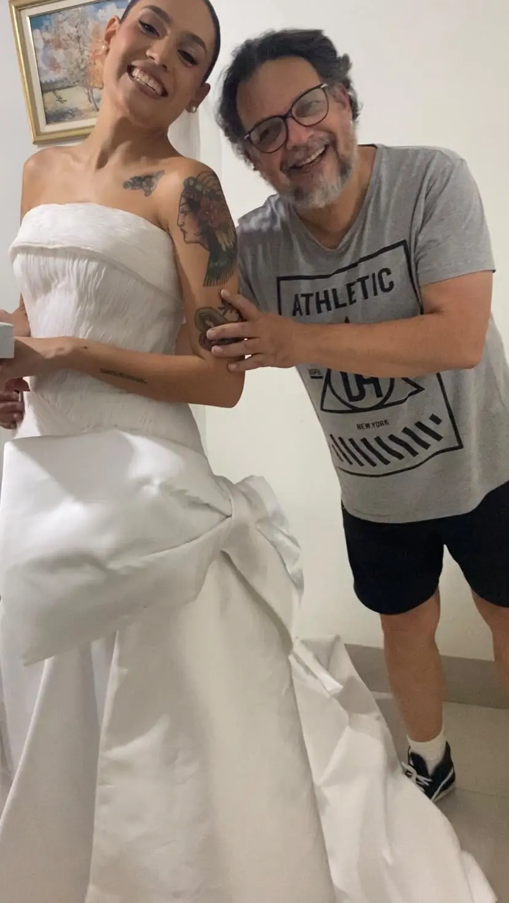

ESTILISTA & MODELISTA
Urbano
Junior
Urbano Junior é estilista e modelista em Goiânia. Desenvolve croquis, peças sob medida e projetos de moda, acompanhando a criação do desenho aos acabamentos.

O ESTILISTA
Criação, desenho
e trabalho de ateliê.
Urbano Junior reúne criação autoral, modelagem e moulage no desenvolvimento de roupas sob medida em Goiânia. O acompanhamento direto permite discutir desenho, materiais e caimento durante as etapas de cada projeto.
O croqui orienta as escolhas de silhueta, recortes e volumes. A modelagem e as provas aproximam essas decisões do corpo, considerando proporções, movimento e conforto. Essa ligação entre desenho e execução faz parte do trabalho do estilista.
O repertório autoral também aparece na coleção Infinitas Posibilidades, apresentada no Nicaragua Diseña em 2022. A publicação oficial destaca a combinação de jeans, assimetrias e detalhes feitos à mão, flor a flor.
Ver a coleção no Nicaragua Diseña- Acompanhamento direto
- Desenho e modelagem
- Peças sob medida
PORTFÓLIO DE CROQUIS
O acervo de desenhos.
Estudos autorais, desenhos à mão e propostas digitais. Um olhar sobre as formas e os detalhes pensados por Urbano Junior.


PROJETO E EXECUÇÃO
Do croqui
à peça.
O vestido de noiva aparece no acervo em desenho e em um registro com o estilista. Drapeados, laço e volumes permitem acompanhar a relação entre o projeto e a peça.
Esse encontro entre desenho e modelagem é parte do desenvolvimento sob medida: a ideia é discutida, construída e ajustada nas provas.
Conhecer o trabalho com noivas

CRIAÇÃO AUTORAL
Referência na
Alta Costura
Silhuetas, volumes e acabamentos em criações de Urbano Junior. Uma seleção de peças e looks de passarela do acervo de alta costura.


PUBLICAÇÕES E EVENTOS
Nicaragua Diseña
Em 2022, Urbano Junior apresentou a coleção Infinitas Posibilidades no Nicaragua Diseña. A proposta reúne jeans, referências utilitárias, elementos românticos e assimetrias. A apresentação oficial destaca detalhes feitos à mão, flor a flor.
Infinitas Posibilidades
Apresentação e galeria da coleção no site oficial do evento.
Ver a coleção PASSARELA · 2022Participação internacional
A cobertura oficial registra a participação do estilista e a proposta da coleção em jeans.
Ler a cobertura FORMAÇÃO E INTERCÂMBIOWorkshop na Escuela Creativa
A notícia de lançamento da edição registra o workshop de Urbano Junior para designers e estudantes.
Ler a publicaçãoFonte: Nicaragua Diseña. Publicações em espanhol; os links abrem em uma nova aba.
SOBRE O TRABALHO
Conheça mais
sobre Urbano Junior.
Quem é Urbano Junior?
Urbano Junior é estilista e modelista em Goiânia. Seu trabalho reúne criação autoral, croquis, modelagem, moulage e desenvolvimento de peças sob medida.
Como os croquis participam da criação?
Os croquis registram ideias de silhueta, volumes, cores e detalhes. No desenvolvimento sob medida, o desenho orienta a conversa sobre o modelo e se conecta às decisões de tecido, modelagem e acabamento.
Como conhecer os projetos e conversar com o estilista?
Os croquis e registros desta página apresentam parte do acervo de Urbano Junior. Outros trabalhos e bastidores podem ser acompanhados no Instagram @urbanojr. O atendimento no studio é com hora marcada, pelo WhatsApp +55 (62) 98164-7663.
STUDIO URBANO JUNIOR
Converse com
o estilista.
Para apresentar uma ideia, conhecer os serviços ou conversar sobre uma peça sob medida.
Rua C-146, 220 · Jardim AméricaGoiânia – GO · 74255-170CONVERSAR COM URBANO JUNIOR
ATENDIMENTO COM HORA MARCADA
O contato é direto com Urbano Junior. Envie suas referências e conte sobre o projeto para combinar o atendimento no studio.
Como chegar ao studio